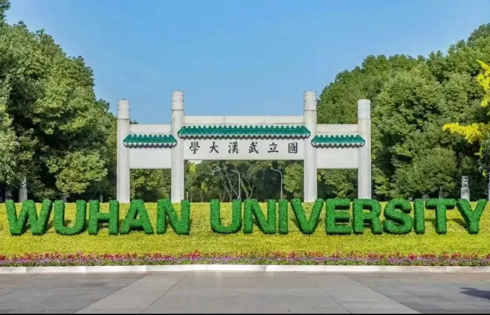

武汉大学徐丹教授招收2026年博士研究生
原文：https://mp.weixin.qq.com/s?__biz=MzAwMzIzOTk5OQ==&mid=2247534661&idx=2&sn=bc250df855a970809685ab48fb508816&chksm=9b3c3115ac4bb803f8f3c69e1f3d2db7be2f315d66d8114227d4f4385c83d717c33a23c88c47#rd 合集：求职/求学/招聘
1
写在前面
我们长期发布招聘/求职板块(甚至我给自己都发了求职：Biomamba求职| 国奖+4篇一作SCI)，欢迎各位老师/老板欢迎联系~我们也在招贤纳士：Biomamba生信基地诚招运营。其它需要求职的小伙伴也欢迎把简历发给我们[Biomamba_zhushou]，大家一起找工作/学习。用人单位也可以联系我们免费刊登招聘信息~
02
ABOUT US

徐丹教授/博士生导师、药理学科带头人/院长、国家优青研究方向与兴趣：发育毒性评价与干预新药发现，专注于胎源性疾病的宫内编程机制、防治靶标及新药研究。“健康与疾病的发育起源（Developmental Origins of Health and Disease, DOHaD）”已得到越来越多的证据支持。“DOHaD”学说的提出，使得成人疾病的胎儿起源问题正式进入大众视野。随着药物滥用现象日益严重、环境污染问题显现、我国“三孩”生育政策实施，胎源性疾病研究逐渐成为备受瞩目的国际前沿和热点问题，已纳入国家自然科学基金中长期及“十四五”学科优先发展领域和科技部重大研究计划生育健康专项。至今，涉及孕期用药安全性（尤其是子代远期危害）的研究报道甚少，探寻药物发育毒性及相关胎源性疾病的表观遗传编程机制，探寻共性防治靶标以实现临床转化，为国家重大需求。徐丹教授聚焦于“发育毒理”领域近20年，针对胎源性疾病临床早期防治困难这一瓶颈问题，围绕“药物相关胎源性疾病的基础与临床转化”研究，从动物模型建立、编程机制新理论及早期预警防治靶标三个方面开展系统性研究并获得了一系列创新性研究成果，部分填补了胎源性疾病研究领域的空白，在国际胎源疾病研究领域处于领跑或并跑地位。主持科技部重点研发计划课题、国家自然科学基金联合基金重点/优青/面上/青年项目，以及湖北省杰青等课题多项。发表第一/通讯作者SCI论文50余篇。授权/申请国家发明专利12项。主编/副主编学术/科普专著《Fetal Origin of Diseases 》《孕期用药与子代健康》《守护新生命：孕期饮食、药物与健康管理》，主参编/教材12部，新理论入教材2部。
课题组目前经费充足，科研氛围轻松，由于课题需要，需要招聘生物信息学背景博士2名，具体要求：
03
JOIN US
- 生物信息学、统计学、药学、生物学、遗传学、基础医学或生物技术等相关专业；
- 主观能动性较强，具有团队协作精神；
- 具有生物信息学以及测序分析相关项目研究背景；例如，转录组测序分析（bulk RNA-seq）；单细胞/单核转录组测序分析（scRNA-seq/snRNA-seq）；全基因组DNA甲基化分析（WGBS）；全基因组关联分析（GWAS）；或多组学联合分析能力等。掌握高通量测序原理及常用的分析软件和流程，熟悉常用的生物信息分析方法和数据处理流程；
- 对科研具有浓厚兴趣，具备良好的英文文献阅读和写作能力。

联系方式
 申请者请将个人简历发送至下面邮件，查阅后我们会快速联系特殊情况可电话直接联系联系方式：电话/微信：15235152129邮箱：sensen_@whu.edu.cn
申请者请将个人简历发送至下面邮件，查阅后我们会快速联系特殊情况可电话直接联系联系方式：电话/微信：15235152129邮箱：sensen_@whu.edu.cn